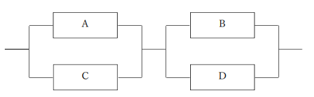
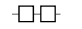
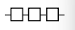
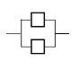

問題２
あるコンピュータシステムのMTBFが400 時間、MTTRが100 時間のとき、このシステムの 稼働率が 幾らか。
ア．
0.20
イ．
0.25
ウ．
0.80
エ．
4.00
あるコンピュータシステムのMTBFが400 時間、MTTRが100 時間のとき、このシステムの 稼働率が 幾らか。
0.20
0.25
0.80
4.00
二つの 装置A、Bが 直列に 接続されたシステムがある。 装置Aの 稼働率が0.8、 装置Bの 稼働率が0.9のとき、システム 全体の 稼働率は 幾らか。ここで、システムは 装置A、Bの 両方が 正常に 動作しているときだけ、 稼働しているものとする。
0.72
0.85
0.90
0.98
四つの 装置A～Dで 構成されるシステム 全体の 稼働率は 幾らか。ここで、 各装置の 稼働率は、AとCが0.9、BとDが0.8とする。また、 並列 接続部分については、いずれか 一方が 稼働しているとき、 当該 並列 部分は 稼働しているものとする。 
0.52
0.92
0.95
0.96




MTBFとMTTRに 関する 記述のうち、 適切なものはどれか。
エラーログや 命令トレースの 機能によって、MTTRは ⾧くなる。
遠隔 保守によって、システムのMTBFは 短かくなり、MTTRは ⾧くなる。
システムを 構成する 装置の 種類が 多いほど、システムのMTBFは ⾧くなる。
予防 保守によって、システムのMTBFは ⾧くなる。